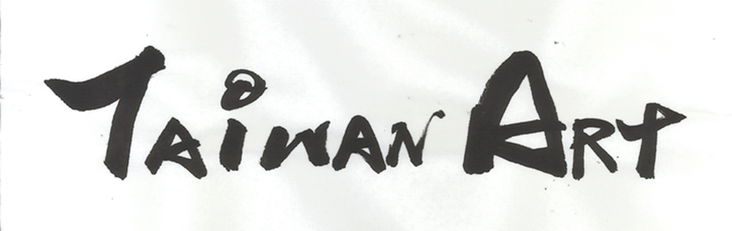

半⽣在台，戰後遭遣返
鹽⽉桃甫是末代武⼠的後代，因為⺠治維新⽽⼀貧如洗，⾝為么⼦的他，因為與祖⽗同天⽣⽇，被認為是祖⽗轉世，性命才得以保住。因為經濟需要⽽來台任教，從此開啟了他與台灣藝壇的情緣，特別是在藝術教育和原住⺠繪畫上。⼀直到戰後，鹽⽉桃甫才被遣返⽇本，當時遭遣返的⽇⼈只能攜帶⼀件⾏領和1000元，他的諸多畫作因此不知去向，下落不明，令⼈感嘆。

台灣的⾼更、⾺提斯
鹽⽉桃甫講求⾃由繪畫，將當下的情感與感激，無率的表達出來。於是他走進沒有⼈敢踏入的原住⺠部落，以ᰀ獸派的⽅式紀錄了原住⺠的⽣活。當桃甫老師第⼀次⾒到原住⺠時，他發現台灣原住⺠並不像傳說般的魯猛獵⼈頭，⽽是親切的向他道聲『歐嗨呦』，經過了這樣的⽂化震撼後，他開始了解、尊、欣賞台灣原住⺠，並拿起他的畫筆，將台灣原住⺠的主題與元素帶入他的創作中。這讓⼈想起在⼤溪地的⾼更；在阿拉伯的⾺提斯。

在檜⽊倒下後──他的作品
『今年夏天我到阿⾥⼭去，那裡的⾃然景觀中，檜⽊已被採伐，到處呈現殘骸累累的場⾯，⼀片荒涼寒冷，秋天的氣氛深刻，如此特別慘澹的風景不由得令⼈湧出同情⼼。』這是鹽⽉桃甫完成〈殘樹〉與〈紅檜之森〉作品後所寫，也是對於⽇本總督府濫採台灣天然資源的無聲抗議。
